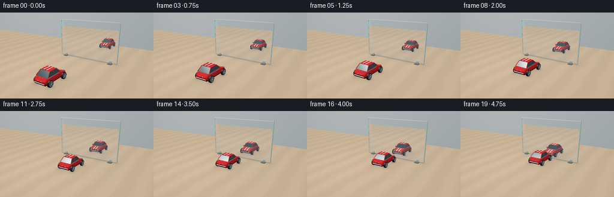
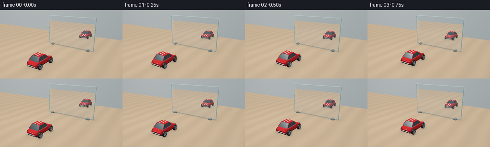

CODING AGENTS AS PIXEL WORLD MODELS
traex/GPT-6.1-Sol · phygen_063
点击播放 · 原生 RGB 像素
逐轮保存的候选
回放视频、检查图与代码变化。
每份候选均可单独播放。实际图片检查记录在下方工具轨迹中。
候选 01播放与检查图
点击播放 · 原生 RGB 像素


展开代码变化
--- 上一保存版本
+++ 本次保存版本
@@ -0,0 +1,314 @@
+"""Procedural tabletop toy-car film. Geometry, lighting and mirror projection only."""
+from pathlib import Path
+import json
+import numpy as np
+from PIL import Image
+from artifact_io import save
+
+ROOT = Path(__file__).resolve().parent
+SPEC = json.loads((ROOT / 'task_spec.json').read_text())
+SS = 3
+W, H = SPEC['width']*SS, SPEC['height']*SS
+CAM = np.array([5., -7.5, 3.8])
+TARGET = np.array([0., .45, .65])
+FORWARD = TARGET-CAM; FORWARD /= np.linalg.norm(FORWARD)
+RIGHT = np.cross(FORWARD, [0,0,1]); RIGHT /= np.linalg.norm(RIGHT)
+UP = np.cross(RIGHT, FORWARD)
+FOCAL = 265*SS
+MIRROR_Y = 1.8
+LIGHT = np.array([-3.5,-4.0,7.0])
+yy,xx = np.mgrid[:H,:W]
+RAYS = FORWARD + ((xx-W/2)/FOCAL)[...,None]*RIGHT - ((yy-H/2)/FOCAL)[...,None]*UP
+
+RED = (0.68, .021, .024)
+BLACK = (.016,.019,.023)
+CHROME = (.55,.61,.64)
+GLASS = (.055,.105,.13)
+WHITE = (.87,.87,.79)
+
+# triangles: points, interpolated normals, base linear color, specular, shininess
+class Mesh:
+ def __init__(self): self.faces=[]
+ def tri(self,p,c,n=None,spec=.2,power=35):
+ p=np.asarray(p,dtype=float)
+ if n is None:
+ n=np.cross(p[1]-p[0],p[2]-p[0]); norm=np.linalg.norm(n)
+ if norm<1e-9: return
+ n=np.tile(n/norm,(3,1))
+ self.faces.append((p,np.asarray(n),np.array(c),spec,power))
+ def quad(self,p,c,n=None,spec=.2,power=35):
+ p=np.array(p)
+ if n is None:
+ self.tri(p[[0,1,2]],c,spec=spec,power=power)
+ self.tri(p[[0,2,3]],c,spec=spec,power=power)
+ else:
+ n=np.array(n)
+ self.tri(p[[0,1,2]],c,n[[0,1,2]],spec,power)
+ self.tri(p[[0,2,3]],c,n[[0,2,3]],spec,power)
+ def box(self,lo,hi,c,spec=.2):
+ a,b,d=lo; A,B,D=hi
+ for pts in [ [[a,b,d],[a,B,d],[A,B,d],[A,b,d]],
+ [[a,b,D],[A,b,D],[A,B,D],[a,B,D]],
+ [[a,b,d],[A,b,d],[A,b,D],[a,b,D]],
+ [[A,B,d],[a,B,d],[a,B,D],[A,B,D]],
+ [[a,B,d],[a,b,d],[a,b,D],[a,B,D]],
+ [[A,b,d],[A,B,d],[A,B,D],[A,b,D]] ]:
+ self.quad(pts,c,spec=spec)
+ def rod(self,a,b,r,c,segments=10,spec=.4):
+ a=np.array(a); b=np.array(b); axis=b-a; axis/=np.linalg.norm(axis)
+ v=np.cross(axis,[0,0,1])
+ if np.linalg.norm(v)<.01: v=np.cross(axis,[0,1,0])
+ v/=np.linalg.norm(v); u=np.cross(axis,v)
+ for i in range(segments):
+ t=i*2*np.pi/segments; T=(i+1)*2*np.pi/segments
+ n=v*np.cos(t)+u*np.sin(t); N=v*np.cos(T)+u*np.sin(T)
+ self.quad([a+r*n,a+r*N,b+r*N,b+r*n],c,[n,N,N,n],spec)
+ def disk(self,center,axis,r,c,spec=.2,segments=32):
+ center=np.array(center); axis=np.array(axis,dtype=float); axis/=np.linalg.norm(axis)
+ v=np.cross(axis,[0,0,1]); v/=np.linalg.norm(v); u=np.cross(axis,v)
+ for i in range(segments):
+ t=2*np.pi*i/segments; T=2*np.pi*(i+1)/segments
+ self.tri([center,center+r*(v*np.cos(t)+u*np.sin(t)),center+r*(v*np.cos(T)+u*np.sin(T))],c,np.tile(axis,(3,1)),spec)
+
+
+def make_car(ypos, rotation):
+ m=Mesh()
+ # Sculpted die-cast body with rounded shoulder cross-sections.
+ sections=[(-.81,.345,.29),(-.67,.41,.42),(-.37,.43,.46),(.24,.425,.45),(.58,.40,.40),(.80,.355,.32)]
+ rings=[]; normals=[]
+ for y,w,z in sections:
+ rings.append(np.array([[-w*.87,y,.175],[-w,y,.245],[-w,y,z-.075],[-w*.91,y,z],[-w*.68,y,z+.013],[w*.68,y,z+.013],[w*.91,y,z],[w,y,z-.075],[w,y,.245],[w*.87,y,.175]]))
+ normals.append(np.array([[-.7,0,-.7],[-1,0,0],[-.96,0,.28],[-.6,0,.8],[-.1,0,1],[.1,0,1],[.6,0,.8],[.96,0,.28],[1,0,0],[.7,0,-.7]]))
+ for j in range(len(rings)-1):
+ for k in range(9):
+ m.quad([rings[j][k],rings[j+1][k],rings[j+1][k+1],rings[j][k+1]],RED,
+ [normals[j][k],normals[j+1][k],normals[j+1][k+1],normals[j][k+1]],.62,65)
+ for j,n in [(0,[0,-1,0]),(-1,[0,1,0])]:
+ ring=rings[j]; center=ring.mean(axis=0)
+ for k in range(9): m.tri([center,ring[k],ring[k+1]],RED,np.tile(n,(3,1)),.45,60)
+ m.box([-.34,-.76,.12],[.34,.73,.18],BLACK)
+ # Black glass cabin; real red pillars and a softly curved red roof.
+ for s in [-1,1]:
+ m.quad([[s*.372,-.61,.46],[s*.29,-.365,.705],[s*.286,.10,.708],[s*.365,.34,.463]],GLASS,
+ np.tile([s*.86,0,.5],(4,1)),.85,100)
+ # window lower chrome trim and a fine door shut line
+ m.rod([s*.375,-.61,.462],[s*.37,.33,.47],.007,CHROME,8)
+ m.rod([s*.292,-.13,.716],[s*.37,-.13,.462],.018,RED,8)
+ m.rod([s*.40,-.39,.408],[s*.405,-.23,.408],.01,CHROME,8)
+ m.rod([s*.428,-.53,.285],[s*.428,.36,.285],.007,(.25,.015,.017),8,.1)
+ m.rod([s*.291,-.36,.712],[s*.376,-.615,.459],.020,RED,8)
+ m.rod([s*.286,.095,.712],[s*.37,.345,.463],.022,RED,8)
+ m.quad([[-.29,.1,.71],[.29,.1,.71],[.366,.34,.47],[-.366,.34,.47]],GLASS,
+ np.tile([0,.71,.70],(4,1)),1.0,95)
+ m.quad([[-.376,-.61,.465],[.376,-.61,.465],[.29,-.365,.705],[-.29,-.365,.705]],GLASS,
+ np.tile([0,-.7,.71],(4,1)),.85,100)
+ m.rod([-.355,.332,.477],[.355,.332,.477],.009,CHROME,8)
+ # windshield wipers
+ m.rod([-.25,.337,.48],[-.10,.20,.609],.006,(.019,.022,.023),6)
+ m.rod([.05,.337,.48],[.20,.20,.609],.006,(.019,.022,.023),6)
+ # roof curved across the car's width
+ xs=np.linspace(-.298,.298,11)
+ for i in range(10):
+ x,X=xs[i:i+2]
+ z=.745-.034*(x/.298)**2; Z=.745-.034*(X/.298)**2
+ m.quad([[x,-.365,z],[X,-.365,Z],[X,.105,Z],[x,.105,z]],RED,
+ [[x/.3*.23,0,1],[X/.3*.23,0,1],[X/.3*.23,0,1],[x/.3*.23,0,1]],.65,65)
+ # A pair of cream racing stripes on roof, hood and rear deck.
+ for x in [-.095,.095]:
+ z=.745-.034*(x/.298)**2+.002
+ m.quad([[x-.028,-.365,z],[x+.028,-.365,z],[x+.028,.10,z],[x-.028,.10,z]],WHITE,spec=.3)
+ for a,b in [(3,4),(4,5)]:
+ y,w,z0=sections[a]; Y,ww,z1=sections[b]
+ y=max(y,.35)
+ if a==3: z0=.45+(.40-.45)*((y-.24)/(.58-.24))
+ m.quad([[x-.028,y,z0+.015],[x+.028,y,z0+.015],[x+.028,Y,z1+.015],[x-.028,Y,z1+.015]],WHITE,spec=.25)
+ m.quad([[x-.028,-.79,.323],[x+.028,-.79,.323],[x+.028,-.64,.44],[x-.028,-.64,.44]],WHITE,spec=.25)
+ # Wheels: rubber rounded tread, bright rims, five rotating spokes.
+ for s in [-1,1]:
+ for cy in [-.53,.52]:
+ cx=s*.427; cz=.185
+ profile=[(-.069,.139),(-.055,.177),(-.035,.185),(.035,.185),(.055,.177),(.070,.139)]
+ for j in range(len(profile)-1):
+ ax,r=profile[j]; bx,R=profile[j+1]
+ for k in range(32):
+ t=2*np.pi*k/32; T=2*np.pi*(k+1)/32
+ pts=[[cx+s*ax,cy+r*np.sin(t),cz+r*np.cos(t)], [cx+s*bx,cy+R*np.sin(t),cz+R*np.cos(t)],
+ [cx+s*bx,cy+R*np.sin(T),cz+R*np.cos(T)], [cx+s*ax,cy+r*np.sin(T),cz+r*np.cos(T)]]
+ norms=[[s*(1 if j==4 else -1 if j==0 else 0)*.65,np.sin(t),np.cos(t)],
+ [s*(1 if j==4 else -1 if j==0 else 0)*.65,np.sin(t),np.cos(t)],
+ [s*(1 if j==4 else -1 if j==0 else 0)*.65,np.sin(T),np.cos(T)],
+ [s*(1 if j==4 else -1 if j==0 else 0)*.65,np.sin(T),np.cos(T)]]
+ m.quad(pts,BLACK,norms,.12,25)
+ outer=cx+s*.071
+ m.disk([outer,cy,cz],[s,0,0],.133,CHROME,.7)
+ m.disk([outer+s*.001,cy,cz],[s,0,0],.109,(.047,.052,.059),.2)
+ for k in range(5):
+ t=rotation+2*np.pi*k/5
+ a=[outer+s*.003,cy+.027*np.sin(t),cz+.027*np.cos(t)]
+ b=[outer+s*.003,cy+.102*np.sin(t+.19),cz+.102*np.cos(t+.19)]
+ m.rod(a,b,.012,(.69,.73,.75),6,.65)
+ m.disk([outer+s*.014,cy,cz],[s,0,0],.031,(.64,.67,.68),.75,16)
+ # Front grille and headlights (also face the viewer in the mirror).
+ m.box([-.20,.796,.207],[.20,.815,.292],(.018,.024,.025),.1)
+ for z in [.224,.242,.26,.278]: m.rod([-.18,.819,z],[.18,.819,z],.005,CHROME,6)
+ for x in [-.269,.269]:
+ m.disk([x,.792,.322],[0,1,.16],.064,CHROME,.75,24)
+ m.disk([x,.798,.323],[0,1,.16],.051,(.94,.86,.57),.7,24)
+ m.box([x-.06,-.807,.27],[x+.06,-.811+.018,.326],(.56,.01,.015),.5)
+ m.rod([-.33,.814,.204],[.33,.814,.204],.024,CHROME,10)
+ m.rod([-.32,-.812,.218],[.32,-.812,.218],.022,CHROME,10)
+ m.box([-.11,-.822,.266],[.11,-.818,.311],(.038,.041,.040),.2)
+ # Small right and left side mirrors.
+ for s in [-1,1]:
+ m.rod([s*.36,.24,.492],[s*.445,.21,.50],.012,CHROME,6)
+ m.box([s*.44-.04,.17,.489],[s*.44+.04,.235,.535],RED,.6)
+ translated=[]
+ for p,n,c,sp,powr in m.faces:
+ p=p.copy(); p[:,1]+=ypos
+ translated.append((p,n,c,sp,powr))
+ m.faces=translated
+ return m
+
+
+def project(p):
+ q=p-CAM
+ z=q@FORWARD
+ return np.column_stack([W/2+FOCAL*(q@RIGHT)/z,H/2-FOCAL*(q@UP)/z]),z
+
+
+def render(mesh,img,depth,clip=None,reflected=False):
+ for world,norm,c,spec,power in mesh.faces:
+ p=world.copy(); nn=norm.copy()
+ if reflected:
+ p[:,1]=2*MIRROR_Y-p[:,1]; nn[:,1]*=-1
+ uv,z=project(p)
+ if z.min()<.01: continue
+ x0=max(0,int(np.floor(uv[:,0].min()))); x1=min(W-1,int(np.ceil(uv[:,0].max())))
+ y0=max(0,int(np.floor(uv[:,1].min()))); y1=min(H-1,int(np.ceil(uv[:,1].max())))
+ if x1<x0 or y1<y0: continue
+ px=xx[y0:y1+1,x0:x1+1]+.5; py=yy[y0:y1+1,x0:x1+1]+.5
+ a,b,d=uv
+ den=(b[1]-d[1])*(a[0]-d[0])+(d[0]-b[0])*(a[1]-d[1])
+ if abs(den)<1e-9: continue
+ l0=((b[1]-d[1])*(px-d[0])+(d[0]-b[0])*(py-d[1]))/den
+ l1=((d[1]-a[1])*(px-d[0])+(a[0]-d[0])*(py-d[1]))/den
+ l2=1-l0-l1
+ inv=l0/z[0]+l1/z[1]+l2/z[2]
+ zz=1/np.maximum(inv,1e-8)
+ good=(l0>=-1e-5)&(l1>=-1e-5)&(l2>=-1e-5)&(zz<depth[y0:y1+1,x0:x1+1])
+ if clip is not None: good &= clip[y0:y1+1,x0:x1+1]
+ if not good.any(): continue
+ weights=np.array([l0[good]/z[0],l1[good]/z[1],l2[good]/z[2]]).T*zz[good,None]
+ position=weights@world
+ n=weights@norm; n/=np.maximum(np.linalg.norm(n,axis=1)[:,None],1e-9)
+ eye=CAM.copy()
+ if reflected: eye[1]=2*MIRROR_Y-eye[1]
+ view=eye-position; view/=np.linalg.norm(view,axis=1)[:,None]
+ # All meshes are double sided; shading uses outward normals.
+ light=LIGHT-position; light/=np.linalg.norm(light,axis=1)[:,None]
+ lam=np.maximum(0,np.sum(n*light,axis=1))
+ hemisphere=.5+.5*n[:,2]
+ illum=.29+.16*hemisphere+.63*lam
+ half=light+view; half/=np.maximum(np.linalg.norm(half,axis=1)[:,None],1e-8)
+ shine=np.maximum(0,np.sum(n*half,axis=1))**power
+ # Softbox broad secondary sheen gives polished toy lacquer and rubber volume.
+ rim=np.maximum(0,n@np.array([.25,.4,.881]))**10
+ col=c[None,:]*illum[:,None]+spec*shine[:,None]*np.array([1.,.97,.90])+spec*.045*rim[:,None]
+ col=np.clip(col,0,1)
+ if reflected: col=col*.84+np.array([.033,.043,.048])
+ img[y0:y1+1,x0:x1+1][good]=col
+ depth[y0:y1+1,x0:x1+1][good]=zz[good]
+
+
+def ground_color(pts,ypos):
+ x=pts[...,0]; y=pts[...,1]
+ # Quiet oak grain: entirely deterministic, tied to the table surface.
+ grain=(np.sin(103*x+2*np.sin(2*y)+.8*np.sin(9*x+1.2*y))+.45*np.sin(238*x+2*y))*.009
+ broad=.022*np.sin(x*5+.23*np.sin(y*2))
+ seam=np.exp(-(np.sin((x+1.2)*np.pi/1.45)/.022)**2)*.04
+ color=np.empty(pts.shape)
+ color[:]=[.59,.455,.313]
+ color += (grain+broad-seam)[...,None]*np.array([1.,.84,.63])
+ # Warm wood under a large, diffuse studio light.
+ illumination=.99+.09*np.exp(-((x+2)**2+(y+2)**2)/18)
+ color*=illumination[...,None]
+ shadow=.20*np.exp(-((x-.06)/.55)**2-((y-ypos-.04)/.88)**2)
+ for wx in [-.43,.43]:
+ for wy in [-.53,.52]:
+ shadow+=.26*np.exp(-((x-wx)/.16)**2-((y-ypos-wy)/.21)**2)
+ # Contact along the glass, and small stand contact patches.
+ shadow+=.15*np.exp(-((y-1.8)/.07)**2)*np.exp(-(x/2.22)**8)
+ shadow+=.12*np.exp(-((y-1.98)/.32)**2)*np.exp(-(x/2.25)**8)
+ color*=np.clip(1-shadow,.27,1)[...,None]
+ return color
+
+
+def environment(orig,directions,ypos):
+ orig=np.broadcast_to(orig,directions.shape)
+ t=-orig[...,2]/np.where(abs(directions[...,2])<1e-7,1e-7,directions[...,2])
+ pts=orig+t[...,None]*directions
+ floor=(t>0)&(pts[...,1]<6.5)&(pts[...,1]>-11)
+ col=np.empty(directions.shape)
+ # Neutral, softly graduated studio beyond the table.
+ gradient=np.clip((yy/H),0,1)
+ col[:]=np.array([.31,.348,.36])
+ col += (.07*(1-gradient))[...,None]
+ col += (.065*np.exp(-((xx-W*.24)/(W*.48))**2-(yy/(H*.85))**2))[...,None]*np.array([1.,.93,.77])
+ fc=ground_color(pts,ypos)
+ col[floor]=fc[floor]
+ return col,t,floor
+
+# Mirror aperture: perspective rays intersect the actual standing glass.
+MT=(MIRROR_Y-CAM[1])/RAYS[...,1]
+MP=CAM+MT[...,None]*RAYS
+MASK=(MT>0)&(abs(MP[...,0])<2.15)&(MP[...,2]>.035)&(MP[...,2]<2.65)
+REFLECT_RAYS=RAYS.copy(); REFLECT_RAYS[...,1]*=-1
+
+# A slender exposed glass edge and two discreet metal feet rather than a picture frame.
+STAND=Mesh()
+STAND.box([-2.177,1.798,.025],[-2.135,1.852,2.668],(.29,.49,.47),.7)
+STAND.box([2.135,1.798,.025],[2.177,1.852,2.668],(.36,.57,.55),.8)
+STAND.box([-2.17,1.797,2.648],[2.17,1.850,2.672],(.58,.71,.69),.8)
+STAND.box([-2.17,1.797,.025],[2.17,1.852,.056],(.27,.42,.41),.7)
+for x in [-1.73,1.73]:
+ STAND.box([x-.13,1.57,.007],[x+.13,2.055,.059],(.18,.21,.21),.6)
+ STAND.box([x-.067,1.746,.055],[x+.067,1.867,.166],(.4,.45,.45),.75)
+
+
+def frame(index):
+ # Constant rolling velocity, then a gentle settling slowdown before glass contact.
+ u=index/(SPEC['frames']-1)
+ progress=u+.07*np.sin(np.pi*u)
+ y=-2.03+2.90*progress
+ car=make_car(y, -(y+2.03)/.185)
+ bg,t,floor=environment(CAM,RAYS,y)
+ image=bg.astype(np.float64)
+ depth=np.where(floor,t,np.inf).copy()
+ # Reflection is not a copied sprite: it uses the same scene and mirrored camera rays.
+ reflected,_,_=environment(MP,REFLECT_RAYS,y)
+ reflected=reflected*.85+np.array([.04,.052,.058])
+ mirror_image=reflected.copy()
+ mirror_depth=np.full((H,W),np.inf)
+ render(car,mirror_image,mirror_depth,MASK,True)
+ # Subtle angled overhead softbox sheen, leaving the car reflection unobscured.
+ glare=.040*np.exp(-((MP[...,0]+1.75+.15*MP[...,2])/.16)**2)*np.clip((MP[...,2]-.50)/1.6,0,1)
+ mirror_image+=glare[...,None]*np.array([.75,.86,1.])
+ image[MASK]=mirror_image[MASK]
+ depth[MASK]=MT[MASK]
+ render(STAND,image,depth)
+ render(car,image,depth)
+ # Filmic sRGB conversion, a subtle lens vignette, supersampled antialiasing.
+ vignette=1-.065*((xx-W*.51)**2/(W*.72)**2+(yy-H*.47)**2/(H*.85)**2)
+ image=np.clip(image*vignette[...,None],0,1)
+ srgb=np.where(image<=.0031308,12.92*image,1.055*image**(1/2.4)-.055)
+ im=Image.fromarray(np.uint8(np.clip(srgb*255,0,255)))
+ return np.asarray(im.resize((SPEC['width'],SPEC['height']),Image.Resampling.LANCZOS))
+
+if __name__=='__main__':
+ frames=[]
+ for i in range(SPEC['frames']):
+ frames.append(frame(i))
+ print(f'Rendered {i+1}/{SPEC["frames"]}',flush=True)
+ frames=np.stack(frames)
+ save(frames,ROOT)
+ print('Saved RGB film:',frames.shape,frames.dtype)
可观测工具轨迹
实际执行的命令与返回图片。
命令 1exit 0
/bin/bash -lc 'ls -la && cat prompt.txt && cat GENERATION_RULES.md && cat task_spec.json'
命令 2exit 0
/bin/bash -lc "cat artifact_io.py && python - <<'PY' import importlib.util for m in ['numpy','PIL','scipy','cv2']: print(m, bool(importlib.util.find_spec(m))) PY"
命令 3exit 0
/bin/bash -lc "python - <<'PY' import numpy as np cam=np.array([5.,-7.5,3.8]); tar=np.array([0.,.45,.65]); fw=(tar-cam);fw/=np.linalg.norm(fw);rt=np.cross(fw,[0,0,1]);rt/=np.linalg.norm(rt);up=np.cross(rt,fw) def p(a): q=np.array(a)-cam; d=q@fw return np.array([128+265*(q@rt)/d,72-265*(q@up)/d]) for o in [[-2.15,1.8,0],[2.15,1.8,0],[-2.15,1.8,2.65],[2.15,1.8,2.65],[0,-1.8,.4],[0,.72,.4],[0,5.4,.4],[0,2.88,.4]]: print(o,p(o)) PY"
命令 4exit 0
/bin/bash -lc "cat > generate.py <<'PY'
\"\"\"Procedural tabletop toy-car film. Geometry, lighting and mirror projection only.\"\"\"
from pathlib import Path
import json
import numpy as np
from PIL import Image
from artifact_io import save
ROOT = Path(__file__).resolve().parent
SPEC = json.loads((ROOT / 'task_spec.json').read_text())
SS = 3
W, H = SPEC['width']*SS, SPEC['height']*SS
CAM = np.array([5., -7.5, 3.8])
TARGET = np.array([0., .45, .65])
FORWARD = TARGET-CAM; FORWARD /= np.linalg.norm(FORWARD)
RIGHT = np.cross(FORWARD, [0,0,1]); RIGHT /= np.linalg.norm(RIGHT)
UP = np.cross(RIGHT, FORWARD)
FOCAL = 265*SS
MIRROR_Y = 1.8
LIGHT = np.array([-3.5,-4.0,7.0])
yy,xx = np.mgrid[:H,:W]
RAYS = FORWARD + ((xx-W/2)/FOCAL)[...,None]*RIGHT - ((yy-H/2)/FOCAL)[...,None]*UP
RED = (0.68, .021, .024)
BLACK = (.016,.019,.023)
CHROME = (.55,.61,.64)
GLASS = (.055,.105,.13)
WHITE = (.87,.87,.79)
# triangles: points, interpolated normals, base linear color, specular, shininess
class Mesh:
def __init__(self): self.faces=[]
def tri(self,p,c,n=None,spec=.2,power=35):
p=np.asarray(p,dtype=float)
if n is None:
n=np.cross(p[1]-p[0],p[2]-p[0]); norm=np.linalg.norm(n)
if norm<1e-9: return
n=np.tile(n/norm,(3,1))
self.faces.append((p,np.asarray(n),np.array(c),spec,power))
def quad(self,p,c,n=None,spec=.2,power=35):
p=np.array(p)
if n is None:
self.tri(p[[0,1,2]],c,spec=spec,power=power)
self.tri(p[[0,2,3]],c,spec=spec,power=power)
else:
n=np.array(n)
self.tri(p[[0,1,2]],c,n[[0,1,2]],spec,power)
self.tri(p[[0,2,3]],c,n[[0,2,3]],spec,power)
def box(self,lo,hi,c,spec=.2):
a,b,d=lo; A,B,D=hi
for pts in [ [[a,b,d],[a,B,d],[A,B,d],[A,b,d]],
[[a,b,D],[A,b,D],[A,B,D],[a,B,D]],
[[a,b,d],[A,b,d],[A,b,D],[a,b,D]],
[[A,B,d],[a,B,d],[a,B,D],[A,B,D]],
[[a,B,d],[a,b,d],[a,b,D],[a,B,D]],
[[A,b,d],[A,B,d],[A,B,D],[A,b,D]] ]:
self.quad(pts,c,spec=spec)
def rod(self,a,b,r,c,segments=10,spec=.4):
a=np.array(a); b=np.array(b); axis=b-a; axis/=np.linalg.norm(axis)
v=np.cross(axis,[0,0,1])
if np.linalg.norm(v)<.01: v=np.cross(axis,[0,1,0])
v/=np.linalg.norm(v); u=np.cross(axis,v)
for i in range(segments):
t=i*2*np.pi/segments; T=(i+1)*2*np.pi/segments
n=v*np.cos(t)+u*np.sin(t); N=v*np.cos(T)+u*np.sin(T)
self.quad([a+r*n,a+r*N,b+r*N,b+r*n],c,[n,N,N,n],spec)
def disk(self,center,axis,r,c,spec=.2,segments=32):
center=np.array(center); axis=np.array(axis,dtype=float); axis/=np.linalg.norm(axis)
v=np.cross(axis,[0,0,1]); v/=np.linalg.norm(v); u=np.cross(axis,v)
for i in range(segments):
t=2*np.pi*i/segments; T=2*np.pi*(i+1)/segments
self.tri([center,center+r*(v*np.cos(t)+u*np.sin(t)),center+r*(v*np.cos(T)+u*np.sin(T))],c,np.tile(axis,(3,1)),spec)
def make_car(ypos, rotation):
m=Mesh()
# Sculpted die-cast body with rounded shoulder cross-sections.
sections=[(-.81,.345,.29),(-.67,.41,.42),(-.37,.43,.46),(.24,.425,.45),(.58,.40,.40),(.80,.355,.32)]
rings=[]; normals=[]
for y,w,z in sections:
rings.append(np.array([[-w*.87,y,.175],[-w,y,.245],[-w,y,z-.075],[-w*.91,y,z],[-w*.68,y,z+.013],[w*.68,y,z+.013],[w*.91,y,z],[w,y,z-.075],[w,y,.245],[w*.87,y,.175]]))
normals.append(np.array([[-.7,0,-.7],[-1,0,0],[-.96,0,.28],[-.6,0,.8],[-.1,0,1],[.1,0,1],[.6,0,.8],[.96,0,.28],[1,0,0],[.7,0,-.7]]))
for j in range(len(rings)-1):
for k in range(9):
m.quad([rings[j][k],rings[j+1][k],rings[j+1][k+1],rings[j][k+1]],RED,
[normals[j][k],normals[j+1][k],normals[j+1][k+1],normals[j][k+1]],.62,65)
for j,n in [(0,[0,-1,0]),(-1,[0,1,0])]:
ring=rings[j]; center=ring.mean(axis=0)
for k in range(9): m.tri([center,ring[k],ring[k+1]],RED,np.tile(n,(3,1)),.45,60)
m.box([-.34,-.76,.12],[.34,.73,.18],BLACK)
# Black glass cabin; real red pillars and a softly curved red roof.
for s in [-1,1]:
m.quad([[s*.372,-.61,.46],[s*.29,-.365,.705],[s*.286,.10,.708],[s*.365,.34,.463]],GLASS,
np.tile([s*.86,0,.5],(4,1)),.85,100)
# window lower chrome trim and a fine door shut line
m.rod([s*.375,-.61,.462],[s*.37,.33,.47],.007,CHROME,8)
m.rod([s*.292,-.13,.716],[s*.37,-.13,.462],.018,RED,8)
m.rod([s*.40,-.39,.408],[s*.405,-.23,.408],.01,CHROME,8)
m.rod([s*.428,-.53,.285],[s*.428,.36,.285],.007,(.25,.015,.017),8,.1)
m.rod([s*.291,-.36,.712],[s*.376,-.615,.459],.020,RED,8)
m.rod([s*.286,.095,.712],[s*.37,.345,.463],.022,RED,8)
m.quad([[-.29,.1,.71],[.29,.1,.71],[.366,.34,.47],[-.366,.34,.47]],GLASS,
np.tile([0,.71,.70],(4,1)),1.0,95)
m.quad([[-.376,-.61,.465],[.376,-.61,.465],[.29,-.365,.705],[-.29,-.365,.705]],GLASS,
np.tile([0,-.7,.71],(4,1)),.85,100)
m.rod([-.355,.332,.477],[.355,.332,.477],.009,CHROME,8)
# windshield wipers
m.rod([-.25,.337,.48],[-.10,.20,.609],.006,(.019,.022,.023),6)
m.rod([.05,.337,.48],[.20,.20,.609],.006,(.019,.022,.023),6)
# roof curved across the car's width
xs=np.linspace(-.298,.298,11)
for i in range(10):
x,X=xs[i:i+2]
z=.745-.034*(x/.298)**2; Z=.745-.034*(X/.298)**2
m.quad([[x,-.365,z],[X,-.365,Z],[X,.105,Z],[x,.105,z]],RED,
[[x/.3*.23,0,1],[X/.3*.23,0,1],[X/.3*.23,0,1],[x/.3*.23,0,1]],.65,65)
# A pair of cream racing stripes on roof, hood and rear deck.
for x in [-.095,.095]:
z=.745-.034*(x/.298)**2+.002
m.quad([[x-.028,-.365,z],[x+.028,-.365,z],[x+.028,.10,z],[x-.028,.10,z]],WHITE,spec=.3)
for a,b in [(3,4),(4,5)]:
y,w,z0=sections[a]; Y,ww,z1=sections[b]
y=max(y,.35)
if a==3: z0=.45+(.40-.45)*((y-.24)/(.58-.24))
m.quad([[x-.028,y,z0+.015],[x+.028,y,z0+.015],[x+.028,Y,z1+.015],[x-.028,Y,z1+.015]],WHITE,spec=.25)
m.quad([[x-.028,-.79,.323],[x+.028,-.79,.323],[x+.028,-.64,.44],[x-.028,-.64,.44]],WHITE,spec=.25)
# Wheels: rubber rounded tread, bright rims, five rotating spokes.
for s in [-1,1]:
for cy in [-.53,.52]:
cx=s*.427; cz=.185
profile=[(-.069,.139),(-.055,.177),(-.035,.185),(.035,.185),(.055,.177),(.070,.139)]
for j in range(len(profile)-1):
ax,r=profile[j]; bx,R=profile[j+1]
for k in range(32):
t=2*np.pi*k/32; T=2*np.pi*(k+1)/32
pts=[[cx+s*ax,cy+r*np.sin(t),cz+r*np.cos(t)], [cx+s*bx,cy+R*np.sin(t),cz+R*np.cos(t)],
[cx+s*bx,cy+R*np.sin(T),cz+R*np.cos(T)], [cx+s*ax,cy+r*np.sin(T),cz+r*np.cos(T)]]
norms=[[s*(1 if j==4 else -1 if j==0 else 0)*.65,np.sin(t),np.cos(t)],
[s*(1 if j==4 else -1 if j==0 else 0)*.65,np.sin(t),np.cos(t)],
[s*(1 if j==4 else -1 if j==0 else 0)*.65,np.sin(T),np.cos(T)],
[s*(1 if j==4 else -1 if j==0 else 0)*.65,np.sin(T),np.cos(T)]]
m.quad(pts,BLACK,norms,.12,25)
outer=cx+s*.071
m.disk([outer,cy,cz],[s,0,0],.133,CHROME,.7)
m.disk([outer+s*.001,cy,cz],[s,0,0],.109,(.047,.052,.059),.2)
for k in range(5):
t=rotation+2*np.pi*k/5
a=[outer+s*.003,cy+.027*np.sin(t),cz+.027*np.cos(t)]
b=[outer+s*.003,cy+.102*np.sin(t+.19),cz+.102*np.cos(t+.19)]
m.rod(a,b,.012,(.69,.73,.75),6,.65)
m.disk([outer+s*.014,cy,cz],[s,0,0],.031,(.64,.67,.68),.75,16)
# Front grille and headlights (also face the viewer in the mirror).
m.box([-.20,.796,.207],[.20,.815,.292],(.018,.024,.025),.1)
for z in [.224,.242,.26,.278]: m.rod([-.18,.819,z],[.18,.819,z],.005,CHROME,6)
for x in [-.269,.269]:
m.disk([x,.792,.322],[0,1,.16],.064,CHROME,.75,24)
m.disk([x,.798,.323],[0,1,.16],.051,(.94,.86,.57),.7,24)
m.box([x-.06,-.807,.27],[x+.06,-.811+.018,.326],(.56,.01,.015),.5)
m.rod([-.33,.814,.204],[.33,.814,.204],.024,CHROME,10)
m.rod([-.32,-.812,.218],[.32,-.812,.218],.022,CHROME,10)
m.box([-.11,-.822,.266],[.11,-.818,.311],(.038,.041,.040),.2)
# Small right and left side mirrors.
for s in [-1,1]:
m.rod([s*.36,.24,.492],[s*.445,.21,.50],.012,CHROME,6)
m.box([s*.44-.04,.17,.489],[s*.44+.04,.235,.535],RED,.6)
translated=[]
for p,n,c,sp,powr in m.faces:
p=p.copy(); p[:,1]+=ypos
translated.append((p,n,c,sp,powr))
m.faces=translated
return m
def project(p):
q=p-CAM
z=q@FORWARD
return np.column_stack([W/2+FOCAL*(q@RIGHT)/z,H/2-FOCAL*(q@UP)/z]),z
def render(mesh,img,depth,clip=None,reflected=False):
for world,norm,c,spec,power in mesh.faces:
p=world.copy(); nn=norm.copy()
if reflected:
p[:,1]=2*MIRROR_Y-p[:,1]; nn[:,1]*=-1
uv,z=project(p)
if z.min()<.01: continue
x0=max(0,int(np.floor(uv[:,0].min()))); x1=min(W-1,int(np.ceil(uv[:,0].max())))
y0=max(0,int(np.floor(uv[:,1].min()))); y1=min(H-1,int(np.ceil(uv[:,1].max())))
if x1<x0 or y1<y0: continue
px=xx[y0:y1+1,x0:x1+1]+.5; py=yy[y0:y1+1,x0:x1+1]+.5
a,b,d=uv
den=(b[1]-d[1])*(a[0]-d[0])+(d[0]-b[0])*(a[1]-d[1])
if abs(den)<1e-9: continue
l0=((b[1]-d[1])*(px-d[0])+(d[0]-b[0])*(py-d[1]))/den
l1=((d[1]-a[1])*(px-d[0])+(a[0]-d[0])*(py-d[1]))/den
l2=1-l0-l1
inv=l0/z[0]+l1/z[1]+l2/z[2]
zz=1/np.maximum(inv,1e-8)
good=(l0>=-1e-5)&(l1>=-1e-5)&(l2>=-1e-5)&(zz<depth[y0:y1+1,x0:x1+1])
if clip is not None: good &= clip[y0:y1+1,x0:x1+1]
if not good.any(): continue
weights=np.array([l0[good]/z[0],l1[good]/z[1],l2[good]/z[2]]).T*zz[good,None]
position=weights@world
n=weights@norm; n/=np.maximum(np.linalg.norm(n,axis=1)[:,None],1e-9)
eye=CAM.copy()
if reflected: eye[1]=2*MIRROR_Y-eye[1]
view=eye-position; view/=np.linalg.norm(view,axis=1)[:,None]
# All meshes are double sided; shading uses outward normals.
light=LIGHT-position; light/=np.linalg.norm(light,axis=1)[:,None]
lam=np.maximum(0,np.sum(n*light,axis=1))
hemisphere=.5+.5*n[:,2]
illum=.29+.16*hemisphere+.63*lam
half=light+view; half/=np.maximum(np.linalg.norm(half,axis=1)[:,None],1e-8)
shine=np.maximum(0,np.sum(n*half,axis=1))**power
# Softbox broad secondary sheen gives polished toy lacquer and rubber volume.
rim=np.maximum(0,n@np.array([.25,.4,.881]))**10
col=c[None,:]*illum[:,None]+spec*shine[:,None]*np.array([1.,.97,.90])+spec*.045*rim[:,None]
col=np.clip(col,0,1)
if reflected: col=col*.84+np.array([.033,.043,.048])
img[y0:y1+1,x0:x1+1][good]=col
depth[y0:y1+1,x0:x1+1][good]=zz[good]
def ground_color(pts,ypos):
x=pts[...,0]; y=pts[...,1]
# Quiet oak grain: entirely deterministic, tied to the table surface.
grain=(np.sin(103*x+2*np.sin(2*y)+.8*np.sin(9*x+1.2*y))+.45*np.sin(238*x+2*y))*.009
broad=.022*np.sin(x*5+.23*np.sin(y*2))
seam=np.exp(-(np.sin((x+1.2)*np.pi/1.45)/.022)**2)*.04
color=np.empty(pts.shape)
color[:]=[.59,.455,.313]
color += (grain+broad-seam)[...,None]*np.array([1.,.84,.63])
# Warm wood under a large, diffuse studio light.
illumination=.99+.09*np.exp(-((x+2)**2+(y+2)**2)/18)
color*=illumination[...,None]
shadow=.20*np.exp(-((x-.06)/.55)**2-((y-ypos-.04)/.88)**2)
for wx in [-.43,.43]:
for wy in [-.53,.52]:
shadow+=.26*np.exp(-((x-wx)/.16)**2-((y-ypos-wy)/.21)**2)
# Contact along the glass, and small stand contact patches.
shadow+=.15*np.exp(-((y-1.8)/.07)**2)*np.exp(-(x/2.22)**8)
shadow+=.12*np.exp(-((y-1.98)/.32)**2)*np.exp(-(x/2.25)**8)
color*=np.clip(1-shadow,.27,1)[...,None]
return color
def environment(orig,directions,ypos):
orig=np.broadcast_to(orig,directions.shape)
t=-orig[...,2]/np.where(abs(directions[...,2])<1e-7,1e-7,directions[...,2])
pts=orig+t[...,None]*directions
floor=(t>0)&(pts[...,1]<6.5)&(pts[...,1]>-11)
col=np.empty(directions.shape)
# Neutral, softly graduated studio beyond the table.
gradient=np.clip((yy/H),0,1)
col[:]=np.array([.31,.348,.36])
col += (.07*(1-gradient))[...,None]
col += (.065*np.exp(-((xx-W*.24)/(W*.48))**2-(yy/(H*.85))**2))[...,None]*np.array([1.,.93,.77])
fc=ground_color(pts,ypos)
col[floor]=fc[floor]
return col,t,floor
# Mirror aperture: perspective rays intersect the actual standing glass.
MT=(MIRROR_Y-CAM[1])/RAYS[...,1]
MP=CAM+MT[...,None]*RAYS
MASK=(MT>0)&(abs(MP[...,0])<2.15)&(MP[...,2]>.035)&(MP[...,2]<2.65)
REFLECT_RAYS=RAYS.copy(); REFLECT_RAYS[...,1]*=-1
# A slender exposed glass edge and two discreet metal feet rather than a picture frame.
STAND=Mesh()
STAND.box([-2.177,1.798,.025],[-2.135,1.852,2.668],(.29,.49,.47),.7)
STAND.box([2.135,1.798,.025],[2.177,1.852,2.668],(.36,.57,.55),.8)
STAND.box([-2.17,1.797,2.648],[2.17,1.850,2.672],(.58,.71,.69),.8)
STAND.box([-2.17,1.797,.025],[2.17,1.852,.056],(.27,.42,.41),.7)
for x in [-1.73,1.73]:
STAND.box([x-.13,1.57,.007],[x+.13,2.055,.059],(.18,.21,.21),.6)
STAND.box([x-.067,1.746,.055],[x+.067,1.867,.166],(.4,.45,.45),.75)
def frame(index):
# Constant rolling velocity, then a gentle settling slowdown before glass contact.
u=index/(SPEC['frames']-1)
progress=u+.07*np.sin(np.pi*u)
y=-2.03+2.90*progress
car=make_car(y, -(y+2.03)/.185)
bg,t,floor=environment(CAM,RAYS,y)
image=bg.astype(np.float64)
depth=np.where(floor,t,np.inf).copy()
# Reflection is not a copied sprite: it uses the same scene and mirrored camera rays.
reflected,_,_=environment(MP,REFLECT_RAYS,y)
reflected=reflected*.85+np.array([.04,.052,.058])
mirror_image=reflected.copy()
mirror_depth=np.full((H,W),np.inf)
render(car,mirror_image,mirror_depth,MASK,True)
# Subtle angled overhead softbox sheen, leaving the car reflection unobscured.
glare=.040*np.exp(-((MP[...,0]+1.75+.15*MP[...,2])/.16)**2)*np.clip((MP[...,2]-.50)/1.6,0,1)
mirror_image+=glare[...,None]*np.array([.75,.86,1.])
image[MASK]=mirror_image[MASK]
depth[MASK]=MT[MASK]
render(STAND,image,depth)
render(car,image,depth)
# Filmic sRGB conversion, a subtle lens vignette, supersampled antialiasing.
vignette=1-.065*((xx-W*.51)**2/(W*.72)**2+(yy-H*.47)**2/(H*.85)**2)
image=np.clip(image*vignette[...,None],0,1)
srgb=np.where(image<=.0031308,12.92*image,1.055*image**(1/2.4)-.055)
im=Image.fromarray(np.uint8(np.clip(srgb*255,0,255)))
return np.asarray(im.resize((SPEC['width'],SPEC['height']),Image.Resampling.LANCZOS))
if __name__=='__main__':
frames=[]
for i in range(SPEC['frames']):
frames.append(frame(i))
print(f'Rendered {i+1}/{SPEC[\"frames\"]}',flush=True)
frames=np.stack(frames)
save(frames,ROOT)
print('Saved RGB film:',frames.shape,frames.dtype)
PY
python generate.py"命令 5exit 0
/bin/bash -lc "python - <<'PY'
from pathlib import Path
import numpy as np
from PIL import Image
p=np.load('pixels.npz')['pixels']
assert p.shape==(144,256,20)
assert len(list(Path('frames').glob('*.png')))==20
for k in [0,19]:
im=np.array(Image.open(f'frames/{k:02d}.png'))
red=(im[:,:,0]>im[:,:,1]*1.35)&(im[:,:,0]>im[:,:,2]*1.3)&(im[:,:,0]>90)
y,x=np.where(red)
print(k,'red pixels',len(x),'bounds',(x.min(),y.min(),x.max(),y.max()))
print('Required artifacts verified.')
PY
command -v ffmpeg || true"保存候选 1 份；完成命令 5 次；可验证图片返回 0 张。原始 API 响应与完整日志保留在本地。